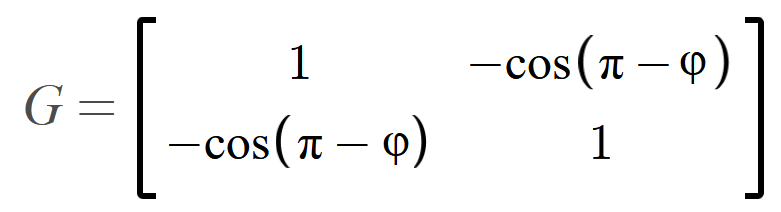
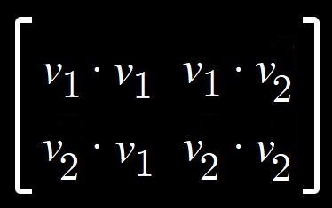
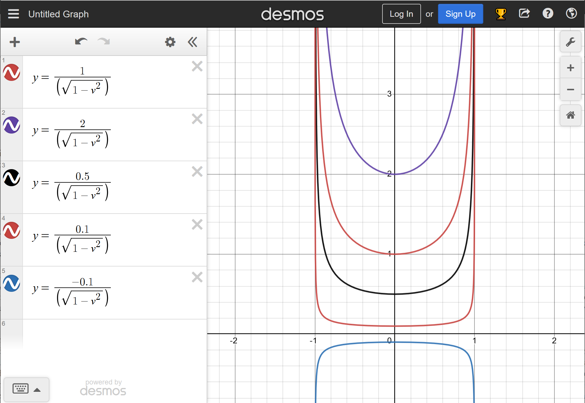

In the fall of 2022 it was my great pleasure to see and hear the orcas of J pod at Lime Kiln State Park with David Neiwert (see bibliography) and his son Devin.
Einstein's visit with Henry Ford is entirely a product of my imagination. Had Ford asked Einstein in 1935 for a simple thought experiment to convey the meaning and essence of relativity, Einstein would have been more likely to have taken Ford to look down from the top of the university's highest building and then to have explained that the happiest thought of his career was that a man falling from a rooftop does not feel any of the effects of gravity (until he strikes ground, of course). We will analyze and criticize Einstein's "happiest thought" in Chapter Twenty-Nine.
It has been said that imitation is the sincerest form of flattery, and you will find much of that here. This vignette is in equal parts a shameless imitation of, an adoring homage to, and an unfair satire of, Douglas Hofstadter's famous tome Gödel, Escher, Bach. It is therefore equally self-referential, and any facetious criticism of his work implicit in what I have written here is at least as applicable to my own. Anyone even passingly familiar with Hofstadter's book is likely to notice at several points in this one where I have taken cues and inspiration from GEB, though I must confess that even after decades of admiring it I — like Achilles — have yet to reach its finish line. In Hofstadter's honor, I have given the tortoise the feminine gender, a decision he wished to have come to earlier than he did. Lewis Carroll, from whom Hofstadter took his own inspiration, gave the tortoise no gender at all; Hofstadter's tortoise became feminine in some of his book's foreign editions.
The use of the word "fit" to title subdivisions of a longer work originates with Lewis Carroll's poem The Hunting of the Snark ("An Agony in Eight Fits") This convention was imitated by the radio series The Hitchhiker's Guide to the Galaxy. Speaking of the Guide, the tablet the tortoise reads from is in some respects similar. Douglas Adams anticipated Wikipedia in some ways, but allowed the entire enterprise to fall under the control of the Vogons ("a horde of bureaucrats who'd be perfectly happy to destroy this planet and everyone on it"). The tortoise having found the tablet discarded by the roadside stems from my memory of Arthur Dent having thrown his copy of the Guide into a river on prehistoric Earth. Achilles asking the tortoise what she is reading is intended as an imitation to Hamlet's dialogue with Polonius, which I re-imagine later in this book.
Recommended resources:
Long before Magellan's time and hundreds of years before the implementation of the International Date Line, the Arab geographer Abulfeda (1273–1331) made the earliest known prediction that those who circumnavigated the globe would accumulate a one-day offset in their reckoning of time, depending on which direction they traveled. Alas, Magellan and Mr. Fogg were not aware.
Figure 2-2 is described as showing the earth's rotation "at equinox" because it is only during these two times of year that the north and south poles would be on the line between day and night, or more precisely, between sunlight and shadow. Due to the tilt of the earth relative to its orbit around the sun, the poles remain in the earth's shadow for six months at a time.
In the early 1930s, Einstein did come to Oxford as a guest lecturer and stayed in the rooms once occupied by Lewis Carroll, whose other professional identity was the mathematician Charles Dodgson (see Robinson's Einstein On The Run, p. 173).
Does anyone here remember usenet?
"Even now, physicists occasionally stumble when relating projectile motion below to planetary orbits above." See, for instance, Lee Smolin's Time Reborn (page 21): "Ellipses trace the planetary orbits and parabolas trace the paths of falling bodies on Earth." This fallacy is discussed at length in Chapter Sixteen.
Recommended resources:
I wanted to mention Benjamin Franklin in connection with my comments on static electricity, but I didn't see a place where it wouldn't have interrupted the flow. Franklin is so well-remembered as a statesman, even I had started to forget his work as a scientist.
"Calculus is thought to have been an invention of necessity for
Newton, though Gottfried Leibniz arrived at many of the same ideas
independently around the same time." For further information on the
history of the development of calculus, see https://www.quora.com/Is-it-true-that-calculus-was-invented-before-Leibniz-and-Newton-in-India
"the answer involves calculus (which really isn't that difficult once you throw away the tedious first third of your textbook dealing with limits and the fundamental theorem of calculus)" I think it's poor practice that a typical calculus course subjects students to this material before getting to the practical applications of calculus. Yes, show us why calculus works, but only if we care after having been shown how.
One of the many ideas that caught my eye but didn't make it into the main text was something in Wolfon and Pasachoff's Physics for Scientists and Engineers (their Figure 18-32b). A ball with angular speed ω and velocity v through a mass of air experiences a force ωxv which is analogous to qvxB. I wouldn't have expected aerodynamics and electromagnetism to have that math in common, but there we are.
Here is the relevant excerpt from Carroll's Sylvie and Bruno Concluded (1893):
"They run their railway-trains without any engines nothing is needed but machinery to stop them with. Is that wonderful enough,Miladi?"
"But where does the force come from ? " I ventured to ask.
Mein Herr turned quickly round, to look at the new speaker. Then he took off his spectacles, and polished them, and looked at me again, in evident bewilderment. I could see he was thinking - as indeed I was also - that we must have met before.
"They use the force of gravity" he said. "It is a force known also in your country, I believe?"
"But that would need a railway going down-hill," the Earl remarked. " You ca'n't have all your railways going down-hill?"
"They all do," said Mein Herr.
"Not from both ends?"
"From both ends."
"Then I give it up!" said the Earl.
"Can you explain the process?" said Lady Muriel. "Without using that language, that I ca'n't speak fluently?"
"Easily," said Mein Herr. "Each railway is in a long tunnel, perfectly straight: so of course the middle of it is nearer the centre of the globe than the two ends: so every train runs half-way down-hill, and that gives it force enough to run the other half up-hill."
"Thank you. I understand that perfectly," said Lady Muriel." But the velocity, in the middle of the tunnel, must be something fearful!"
See also https://en.wikipedia.org/wiki/Gravity_train#Origin_of_the_concept.
As an amusing aside, the opposite points of the earth which such a train might connect are called antipodes. In a much earlier novel, Carroll's Alice mispronounces the word as "antipathies."
Recommended resources:
"Potentially losing some information is a fundamental consequence of differentiation." The initial values are lost; the indefinite integral suggests that you can just make one up when you go in reverse, because any starting value would be valid.
Thanks to "Mark44" in Washington state for setting me straight when I couldn't figure out how I was not getting a calculation right (I started with the wrong formula). https://www.physicsforums.com/threads/differentiating-euler-formula-vs-multiplying-by-i.1048002/
Recommended resources:
Poincaré's description of a world where changes in size are driven by temperature calls to mind Alice's ability in Wonderland to shrink by fanning herself. When Alice is told to "keep her temper," the more archaic second meaning is that she must take care that her changes in size all happen in proportion rather than, for instance, growing a serpent-like neck.
I had originally intended to show the metric tensor and the calculation of distance with covariant vector components, but after realizing I had gotten it wrong on my first attempt I decided that the whole affair was better suited for the end notes. What I had forgotten to do was to include the dot products of the dual bases with themselves.
Since the angle θ between the covariant components v1 and v2 (and between the dual basis vectors e1 and e2) is π (180 degrees) minus the angle φ (Figure 17-32) between the two basis vectors e1 and e2, we could rewrite this as :
v2 = (v1)2 + (v2)2 - 2( v1 v2cos(π- φ )) = = 1v1v1 - 1v1v2cos(π- φ ) - 1v2v1cos(π- φ ) + 1v2v2
Equation 17-3. The length of a vector in terms of its covariant components and the angle between them and between the dual basis vectors.
where π- φ is the angle between the two covariant components of v.
In terms of a metric tensor, this would be as follows in Figure 17-35, remembering that the elements of this tensor are indexed as shown in Figure 17-36:
 
Figure 17-35. A metric tensor for use with contravariant (dual) basis vectors and covariant vector components in a system with non-orthogonal coordinate axes.
Figure 17-36. The index key for the metric tensor in Figure 17-35.
Recommended resources:
Recommended resources:
Recommended resources:
To those readers wondering what on earth this chapter was all about, I thank you for indulging me in a bit of fun. This was the first chapter of the book written largely — if not solely — for the purpose of entertainment (preferably, yours as well as mine); others followed, eventually to become this book's "fits." It all began with the idea of Hamlet's tribute to Einstein. Several other aspects of this scene seemed to develop together, and I decided to lean into the obvious anachronism of its premise; it presented itself as a humorous way to precede a more serious discussion of time (and a certain loss of sequentiality) in the next chapter. I decided to name the inn the Non Sequitur (Latin for "it does not follow"), and to play with the comedic non sequitur in the tradition of two of the great plays whose characters I have borrowed and placed in this setting.
Alice's tutor would presumably have been Lewis Carroll himself, who taught mathematics at Oxford under his real name, Charles Dodgson. I have cast the former Oxford-area furniture dealer Theophilus Carter (a.k.a. the Mad Hatter) as the owner of this restaurant. See page 69 of The Annotated Alice for more amusing background on the historical and fictional Mad Hatters.
The inn's relationship with time is not unlike that of the Hatter's Mad Tea-Party, but perhaps more like the concept of Douglas Adams' Milliways, The Restaurant at the End of the Universe where people "of all ages" might mingle, and where it is always the same time. Adams borrowed from Carroll many times; compare his "If you've done 6 impossible things this morning, why not round it off with breakfast at Milliways" with this snippet of dialogue from Through the Looking-Glass:
Alice laughed. “There’s no use trying,” she said: “one can’t believe impossible things.”
“I daresay you haven’t had much practice,” said the Queen. “When I was your age, I always did it for half-an-hour a day. Why, sometimes I’ve believed as many as six impossible things before breakfast.”
I only wrote the dialogue around the reception desk in order to smooth the way for my Edgar Allan Poe reference (which also pointed to the strange cyclical time of Milliways and the Tea Party); but having done that, I decided that the hostess ought to give her responses subtly out of sequence in her dialogue with Alice. Perhaps she is related to the White Queen?
The philosophers song was written by Eric Idle of Monty Python (https://www.youtube.com/watch?v=l9SqQNgDrgg). In regards to the posters on the wall, my non-exhaustive survey of time travel in cinema finds that the stand-alone movies (those not having sequels or prequels to speak of) often feature strange loops (which I note with a nod in the direction of Douglas Hofstadter).
Some of the humor just wrote itself. I didn't have his paradoxes in mind when I wrote Zeno's comment about not yet having managed to get to the Restaurant at the End of the Universe; I hope that line strikes others as funny as it did me.
Alas, something instructive did find its way into this chapter, but I only allowed it because I found it too amusing. Rosencrantz's retort to Guildenstern reflects a key concept in this book, indeed one that relates to its title: that we are not always justified in asserting that something has or has not yet taken place somewhere else. This idea is developed further in the following chapter, in a subsequent chapter again featuring these characters, and finally in the concluding chapter, "Einstein's Cat."
The quotation that ends this chapter is an "aside" from Polonius in the play Hamlet, taken from a scene that I have parodied in a subsequent "fit." It seems fitting both for that reason and as my excuse for what I have written as this "fit."
Recommended resources:
See Robinson's Einstein on the Run regarding Einstein discussing Poincaré with his mates Habicht and Solovine. The trio "...argued in detail about a recently published book, Science and Hypothesis . . ."
"As early as 1898, Poincaré questioned the meaning of simultaneity over large distances and wrote that there may not be a meaningful, universally applicable time." See Orzel, Timekeeping, pp. 199-202 regarding Poincaré's 1898 "The Measure of Time."
This bonus figure shows how various proper distances (on the y axis) become infinite at various speeds (as a percentage of the speed of light):

In his second relativity paper in 1905–06 Henri Poincaré showed how, by taking time to be an imaginary fourth spacetime coordinate ict, where c is the speed of light and i is the imaginary unit, Lorentz transformations can be visualized as ordinary rotations of the four dimensional Euclidean sphere x2 + y2 + z2 + (ict)2 = const . Poincaré set c = 1 for convenience. . ...
The analogy with Euclidean rotations is only partial since the radius of the sphere is actually imaginary which turns rotations into rotations in hyperbolic space (see hyperbolic rotation). This idea, which was mentioned only briefly by Poincaré, was elaborated by Minkowski in a paper in German published in 1908 called "The Fundamental Equations for Electromagnetic Processes in Moving Bodies". Minkowski, using this formulation, restated the then-recent theory of relativity of Einstein. In particular, by restating the Maxwell equations as a symmetrical set of equations in the four variables (x, y, z, ict) combined with redefined vector variables for electromagnetic quantities, he was able to show directly and very simply their invariance under Lorentz transformation. He also made other important contributions and used matrix notation for the first time in this context. From his reformulation he concluded that time and space should be treated equally, and so arose his concept of events taking place in a unified four-dimensional spacetime continuum.
Einstein used both systems of notation in his 1916 general-audience book Relativity.
Recommended resources:
I found https://www.geometrygames.org/CurvedSpaces/ very amusing. This is NOT the idea of curved spaces that I will be presenting here, but an idea of this type was entertained by Einstein: that the universe might be unbounded yet finite. That the three-dimensional universe could loop back on itself in all directions is an idea that seems too slippery for my mind to grasp very tightly.
The rows and columns of books of maps is a metaphor for the phase space explained by Grant Sanderson (https://www.3blue1brown.com/lessons/differential-equations, cited above) and Sean Carroll (Biggest Ideas, p. 76-80) On Carroll's page 80: "The entire trajectory is fixed by knowing what point to start at;" page 99: "According to the Laplacian paradigm, specifying one point in phase space at one moment in time is enough to determine the entire trajectory of a system."
"I am he as you are he . . ." In Rosencrantz and Guildenstern Are Dead, the confusion of one character with the other is a running joke which apparently extends a long-standing thespian tradition: https://en.wikipedia.org/wiki/Rosencrantz_and_Guildenstern. I'll leave it to you to puzzle out the thematic references I make to Carroll's poem here.
Scene one is a satire of the gravediggers scene in Hamlet which takes aim at certain celebrity scientists who shall remain unnamed in this context. "Eric Geller" is a mashup of names of two sensationalists of a bygone generation.
In this chapter, Hamlet is a quantum system that Rosencrantz intends to interrogate. In scene two, he is the particle passing through two slits. Which version of scene two is "real" depends on its time order relative to scenes one and three, which take place elsewhere. From Gribbin's In Search of Schrödinger's Cat, page 175: "Our world is a hybrid combination of the two possible worlds corresponding to the two routes for the particle, and each world interferes with the other."Scene two is parody of another scene in Hamlet (Act II, Scene 2). The comedic non sequitur was integral to the original. Some of the dialogue still fits my story but with a new meaning that touches directly on the "Einstein's Cat" question (Introduction and Conclusion).
The limerick Rosencrantz has written on the wall is my adaptation of an original by A. H. Reginald Buller, published in a 1923 issue of Punch (see https://www.nationalreview.com/corner/a-young-lady-named-bright-etc/). This is also a bawdy allusion to Hamlet's mother, who in her "haste" "wandered" in a "relative way" in allowing herself to be wooed by her deceased husband's brother "the previous knight", setting the "time" "out of joint" in a different sense than how the reverse time travel of the limerick would cause a paradox.
In this chapter, the "Alice" we have come to know from the previous "fits" turns out to be a story-within-a-story; she is the creation of an early-mid-90s cyberpunk by the name of Alice who shares an affection for Lewis Carroll with one of her favorite authors, Douglas Adams. Unlike Carroll's Alice, this one writes her own story. Inspired in part by the Hitchhiker's Guide to the Galaxy, she has envisioned a future in which information is more free, not tethered to university enrollment or to a 9600-baud telephone connection. In the words of the Sex Pistols song she parodied, she is a "dog's body" with a "council tenancy." In that she has anticipated such things ahead of her time, she is like Thomasina in Stoppard's Arcadia.
How can you write Alice without parody verse? You have to include it, and it's best to aim it at something that is taken too seriously. Lewis Carroll was a brilliant satirist, subverting overly-sober popular poems and replacing their moral lessons with absurdities ("You Are Old, Father William"). This was in the same grand tradition as Warner Brothers studios' take on "Ride of the Valkyries" starring Bugs Bunny and Elmer Fudd ("What's Opera, Doc?"), and "Weird Al" Yankovic's "Theme From Rocky XIII."
Chapter one of Through the Looking Glass has one of Alice's two kittens playing with a ball of yarn and making a mess "all knots and tangles." Later Tweedledee and Tweedledum spar over a "spoiled" rattle.
_____________
Kent Heiner lives in northwest Washington state. He studied math, physics and computer science at Western Washington University and has an undergraduate degree in international relations from Brigham Young University. He is also the author of Without Smoking Gun: Investigating the Death of LCDR William B. Pitzer (TrineDay, 2004). He recently concluded a twenty-year career as a database administrator in the insurance and telecommunications industries and will be looking for something different after the completion of this book. Kent maintains a website at www.monstro.us and welcomes your feedback. If you find some value in this book, you can make a donation at ko-fi.com/heiner.
"The long-awaited completion of the Hamlet trilogy which also manages somehow to incorporate a natural completion of the story arc begun in Alice's Adventure in Wonderland. A must-read for lovers of any kind of book whatsoever." - No one, ever. Or Henri Poincaré, eventually?
"Pundits and gurus outgrowing their britches? Reductive satire that keeps
you in stitches." - Maria von T.